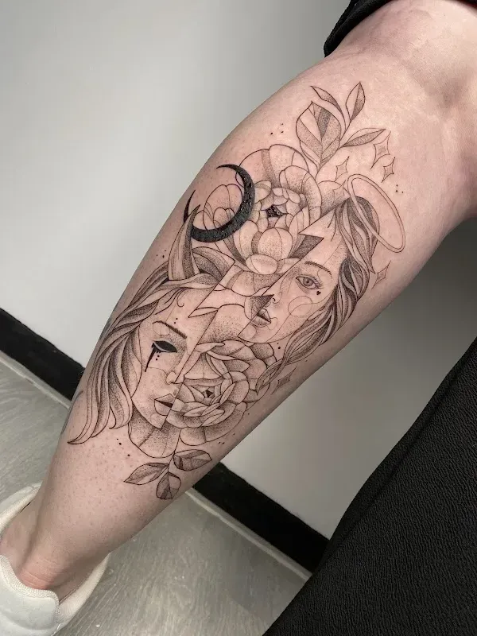
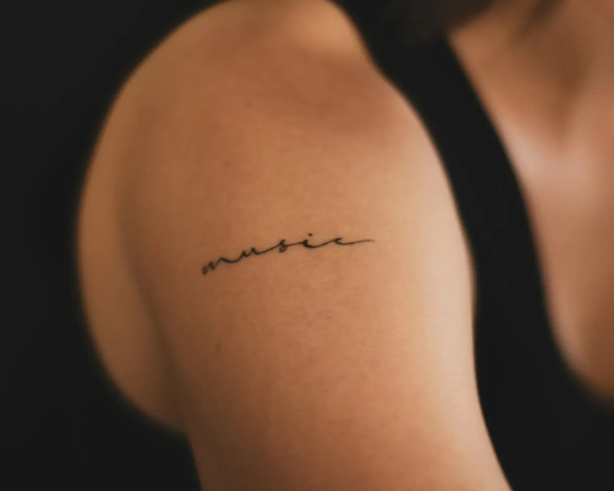
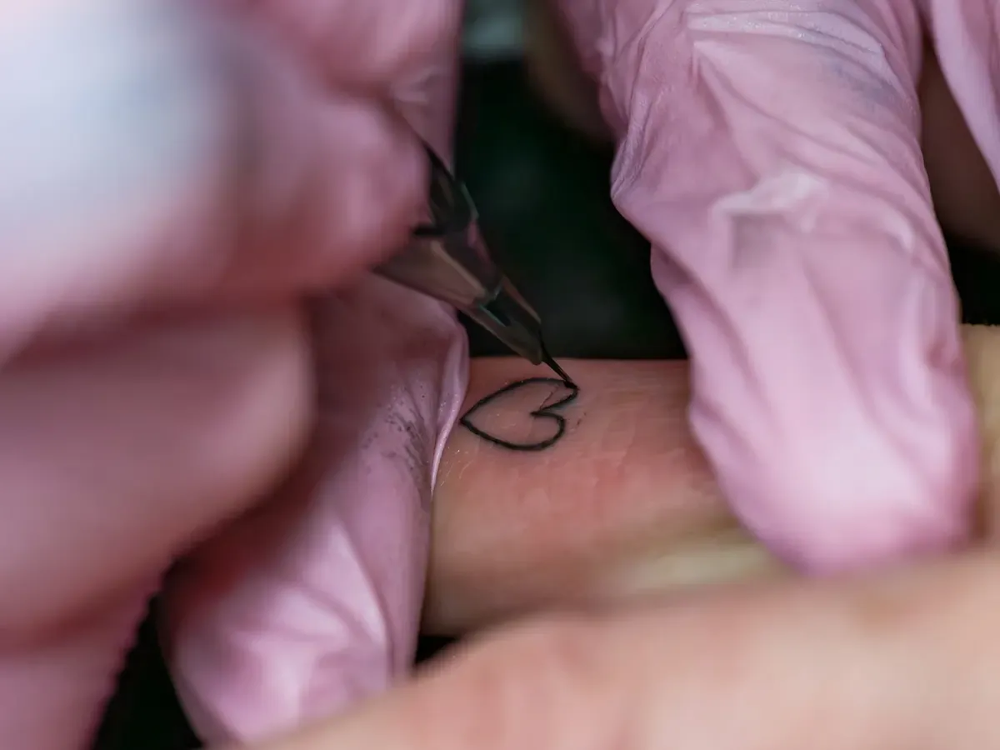
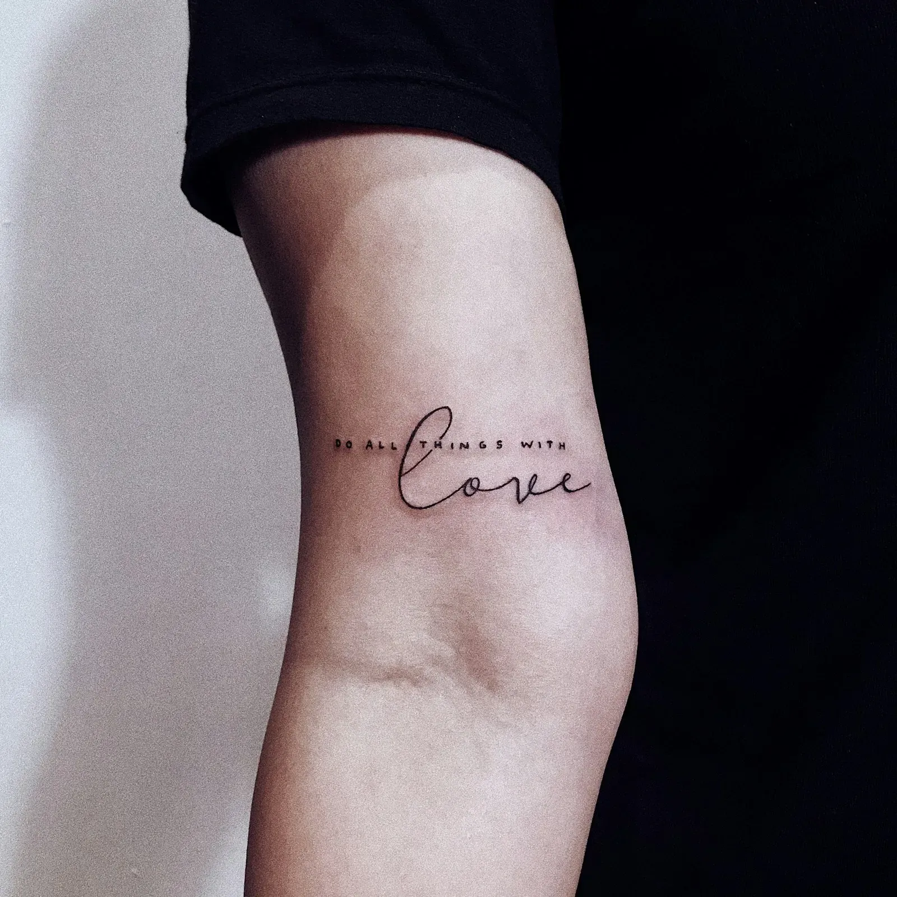

Een tattoo die je met een glimlach laat zetten.
Fijne lijnen, tekst en ontwerpen die alleen van jou zijn. Gezet met een lichte hand, met een vrolijke babbel erbij.

48 reviews op Google
Van 10u tot 17u. Maandag en zondag gesloten.

Klein en fijn, of een groter stuk over je kuit.
Zenuwachtig 
Je komt binnen, krijgt eerst een babbel en pas als het goed voelt, begint het werk. Saltje werkt met een lichte hand, dus het valt vaak beter mee dan je denkt. En wie al een paar tattoos heeft, weet het: hier kom je graag terug.
Heb je nog geen afgewerkt idee? Geen probleem. Een woord, een bloem, een herinnering of een paar foto's zijn genoeg om samen een ontwerp te maken.
Ik ben een ganse week enorm zenuwachtig geweest, maar vanaf het moment dat ik de deur binnenstapte viel er meteen een stuk stress van mij af.
Wat je hier
laat zetten
Van een klein woordje op je pols tot een ontwerp dat over je hele kuit loopt. Altijd getekend voor één persoon.

01Fine line
Dunne, duidelijke lijnen die mooi blijven.
Op maat
Je idee, uitgetekend tot het helemaal klopt.
Klein en fijn
Een woord, een symbool, een datum.
Bijwerken & herstellen
Een oudere tattoo die wat liefde kan gebruiken? Die wordt hier netjes bijgewerkt.
"Giga aanrader. Professioneel, heel straf in haar job, en superleuke ervaring met vrolijke babbels. Saltje weet wat ze doet, zowel op professioneel als op menselijk vlak."
"Heel blij met mijn tattoo. Super duidelijke fine line! Heel vriendelijke mensen. TOP ervaring!"
"Meerdere keren al geweest, en ik zal blijven gaan, niet alleen een top tatoeur maar ook een super toffe madam!"
"Ik heb vandaag hier mijn Tattoo laten herstellen/ bijwerken en ik ben er super tevreden over. Het zijn professionele mensen die je een welkom gevoel geven en ze weten wat ze doen."
"Ik ben een ganse week enorm zenuwachtig geweest, maar vanaf het moment dat ik de deur binnenstapte viel er meteen een stuk stress van mij af. Hier zijn ze super vriendelijk en spontaan en stellen je meteen op u gemak."
Zin om
te beginnen?
Stuur een berichtje met je idee, een paar foto's of gewoon een vraag. Dan zoeken we samen een moment dat past.
Openingsuren
- Maandaggesloten
- Dinsdag10u tot 17u
- Woensdag10u tot 17u
- Donderdag10u tot 17u
- Vrijdag10u tot 17u
- Zaterdag10u tot 17u
- Zondaggesloten
Handig om op voorhand te weten.
De ingang is vlot bereikbaar en er is een aangepaste parkeerplaats.